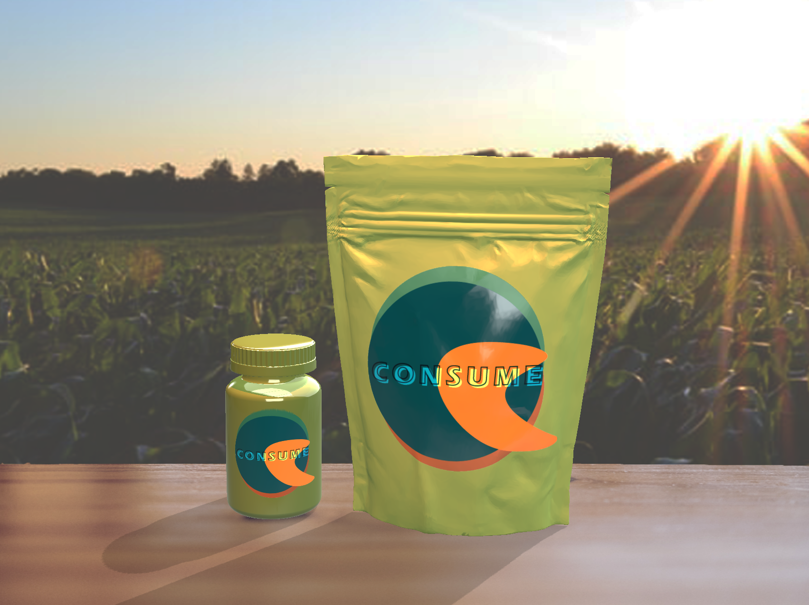
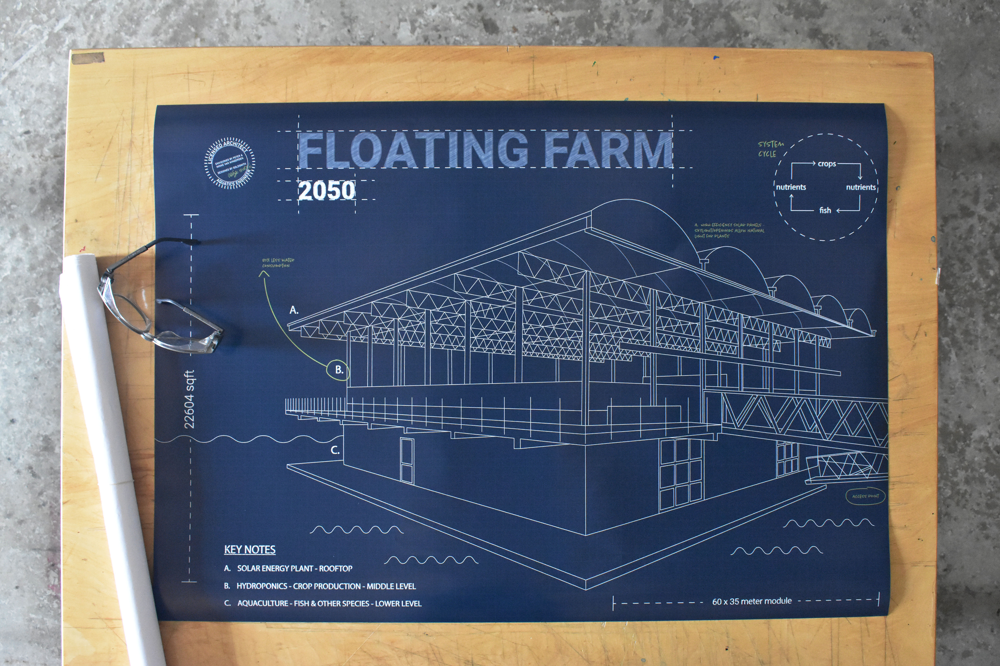

ART - SPECULATIVE WORLD
ANOTHER WORLD - THE FUTURE
The year is 2050, in the past three decades the planet's population has increased almost 20 percent to 9.15 billion people. To keep up with increased demand and population, crop production has increased its yields accordingly to provide food for everyone. Farming has been scientifically transformed and taken to the next level. Our scientists have been working hard in the lab to create a healthier and better future for you and your loved ones. One traditional meal per day will be replaced by a meal supplement pill or gummy - delivered monthly and providing one supplement per day. Reducing one meal a day across the planet will help farms keep up with feeding the growing population. Enter “Consume”, the brand behind the idea makes replacement pills from healthy and balanced ingredients. Fast and processed foods are now a trend of the past, and your Consume pills/gummies will help to wipe those taste buds and junk food cravings from your existence. Aiding brands similar to Consume, are scientifically developed floating farms. They not only provide fresh food and promote healthier eating, but also work to minimize the travel distances for food and ultimately help to reduce Earth’s carbon footprint.
Multilevel floating farms are the new norm for food production. The purpose of these smart floating farms is to help reduce food risk associated problems, make food production more diverse, and strive to use clean energy to provide you with fresh food closer to home. Our increased population has led to overcrowding on land - locating the floating farms on unused sea space in port cities allows for production growth without sacrificing people’s homes. Port city locations around the world also minimizes the expense and pollution caused from transporting fresh produce across long distances. Maritime shipping is the world’s most carbon efficient form of transporting goods.
The blueprint outlines a replicable and scalable modular design. Their modular design enables them to expand into floating cities and adapt to a worldwide scale. Fresh crops and fish can be directly supplied to your nearest city, and transportation of fresh produce will transpire via different channels; direct purchasing, markets, restaurants, supermarkets, hotels, and more. In order for floating farms to produce enough fresh meals for today’s population, sensory robots are lending a hand to reinvent how we farm. Sensory robots tend to floating farms while also monitoring climate and environmental factors in the farms. They plant seeds, monitor growth, and are capable of understanding soil composition and growth rates. Built in optical sensors help to eliminate waste by recognizing color hues in plants to determine if they are healthy or not during various growth stages. The sensory robots are helping your local producers better understand machine behavior and plant health, while assisting in performing field tasks. These sensory robots are still working hand in hand with farmers and scientists, if you are in need of a job contact your local lab for farming, scientist, and engineering positions.
What we were once used to in the past, having three whole meals a day, will be lessened to two whole nutritious meals, designed to provide all the necessary nutrients and have you feeling better than ever before. Meal replacement pills have created less need for sit down meals, which has thus increased the value of eating meals together. “Traditional Social Meals” are now considered special occasions, and should be appreciated and valued. It is in human nature to socialize, and restaurants still exist because of this. All restaurants are able to provide healthy and fresh foods, cooked from local produce grown at the floating farms. However, you may come across a rebellious cook who is still practicing meal styles of yesteryear. These types of meals are considered “cheat” meals in society’s revised eating scheme - and Consume provides special pills to help balance your diet after a cheat meal. While Consume and floating farms are working to create a healthier Earth, human nature is a powerful thing and we are striving to provide all the tools necessary to better our human habits while keeping everyone full and healthy.
Multilevel floating farms are the new norm for food production. The purpose of these smart floating farms is to help reduce food risk associated problems, make food production more diverse, and strive to use clean energy to provide you with fresh food closer to home. Our increased population has led to overcrowding on land - locating the floating farms on unused sea space in port cities allows for production growth without sacrificing people’s homes. Port city locations around the world also minimizes the expense and pollution caused from transporting fresh produce across long distances. Maritime shipping is the world’s most carbon efficient form of transporting goods.
The blueprint outlines a replicable and scalable modular design. Their modular design enables them to expand into floating cities and adapt to a worldwide scale. Fresh crops and fish can be directly supplied to your nearest city, and transportation of fresh produce will transpire via different channels; direct purchasing, markets, restaurants, supermarkets, hotels, and more. In order for floating farms to produce enough fresh meals for today’s population, sensory robots are lending a hand to reinvent how we farm. Sensory robots tend to floating farms while also monitoring climate and environmental factors in the farms. They plant seeds, monitor growth, and are capable of understanding soil composition and growth rates. Built in optical sensors help to eliminate waste by recognizing color hues in plants to determine if they are healthy or not during various growth stages. The sensory robots are helping your local producers better understand machine behavior and plant health, while assisting in performing field tasks. These sensory robots are still working hand in hand with farmers and scientists, if you are in need of a job contact your local lab for farming, scientist, and engineering positions.
What we were once used to in the past, having three whole meals a day, will be lessened to two whole nutritious meals, designed to provide all the necessary nutrients and have you feeling better than ever before. Meal replacement pills have created less need for sit down meals, which has thus increased the value of eating meals together. “Traditional Social Meals” are now considered special occasions, and should be appreciated and valued. It is in human nature to socialize, and restaurants still exist because of this. All restaurants are able to provide healthy and fresh foods, cooked from local produce grown at the floating farms. However, you may come across a rebellious cook who is still practicing meal styles of yesteryear. These types of meals are considered “cheat” meals in society’s revised eating scheme - and Consume provides special pills to help balance your diet after a cheat meal. While Consume and floating farms are working to create a healthier Earth, human nature is a powerful thing and we are striving to provide all the tools necessary to better our human habits while keeping everyone full and healthy.

